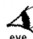
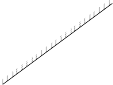
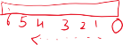
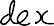
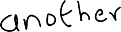
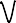
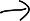

108 100 visible spectrum 106 102 104 104 102 106 100 108 102 1010 104 1012 104 1014 104 10-10 1016 1018 10-12 1020 -14 10 1022 -16 10 1024 f(x 3 Hz) increasing energy X rays radio waves microwaves infrared ultraviolet gamma rays")
NCERT CLASS X -- CHAPTER10 -- Light – Reflection and
Refraction
What is light?
Light is a form of energy that is visible to the human
eye.
How do we see objects ?
SOLUTION
Suppose, you are standing in a darkroom. Will you be
able to see the ceiling fan or the almirah kept in the
room?
The answer is NO. Now, if you light a candle in the
room, you will not only be able to see the candle flame
but also other objects present in the room. You are able
to see the candle flame because light from the flame
reaches your eyes and falls on the retina. Here, this
light is converted into electrical signals which move to
the rear of your brain where you interpret the
information transmitted by light. The system of your
brain can interpret the colour, the shape, etc., of the
objects. We say that an image is formed on the retina
which is interpreted by the brain.
What are the properties of light rays?
SOLUTION
Light properties
Light rays travels in straight line.
Speed of light in vacuum is 3 × 108 m/s
Light rays undergo different phenomena :
reflection, refraction, dispersion, interference,
diffraction etc.
Light is a electromagnetic phenomena or it is an
electromagnetic wave.
It does not need a material medium to travel, i.e.
light wave can travel in vacuum also. It is because of
this reason that light is able to reach earth from the
sun.
Are there any subdivision of study of light or optics ?
SOLUTION
The study of light is divided into three fields:
geometric/ray optics, wave/physical optics, and
quantum optics.
In geometric optics light is characterized as rays. We
study phenomena like reflection, refraction etc.
In wave optics we treat light as an electromagnetic
wave. We study phenomena like interference,
diffraction etc.
Quantum optics makes use of the fact that light is
quantized, its energy localized in point particles called
photons. We study phenomena like photoelectric effect,
X-ray diffraction.
Why do we study light in different ways ?
SOLUTION
Some of the phenomena of light can be explained only if
light is considered to be made up of waves whereas
others can be explained only if light is thought to be
made up of particles.
For example, the phenomena of diffraction (bending of
light around the corners of tiny objects), interference
and polarization of light can only be explained if light is
considered to be of wave nature.
The particle theory of light cannot explain these
phenomena. On the other hand, the phenomena of
reflection and refraction of light, and casting of
shadows of objects by light, can be explained only if
light is thought to be made of particles. Wave theory of
light cannot explain these phenomena. Thus, there is
evidence for the wave nature of light as well as for
particle nature of light.
What is electromagnetic spectrum ?
SOLUTION
The electromagnetic spectrum is the full range of
wavelengths of all electromagnetic waves.

Visible spectrum
Emergency
and defence
10-12
adio waves
n ra-re
radiation
Microwaves
and
radar
Increasing energy
Increasing frequency
ravio e
radiation
1010
X-rays
Gamma
rays
radio
104
104
AM
radio
106
102
TV and
FM
radio
108
100(1)
1010
104
1014
1018
10
1020
Frequency (Hertz)
10¯4
Wavelength (metres)
Increasing wavelength
10¯6
1022
14")
The wavelength of visible light waves is very small
(being only about 4 × 10–7 m to 8 × 10–7 m)
What are transparent, translucent and opaque objects ?
SOLUTION
Like current passes through metallic wires only,
similarly light also passes through materials which are
called transparent.
Current will not pass through materials which are non-
conducting similarly light will not pass through opaque
substances.
A limited amount of light will pass through substances
called as translucent.
What are different objects ?
SOLUTION
Anything which gives out light rays (either its own or
reflected by it) is called an object. A bulb, a candle, a
pin-head, an arrow, our face, or a tree, are all examples
of objects from the point of view of study of light. The
objects can be of two types :
very small objects (called point objects) or large objects
(called extended objects).
The diverging rays from a point source are emitted in
all directions. It is useful to think of each point on an
object as a point source of light rays.
Explain formation of shadows ?
When a region that would otherwise be illuminated is
blocked from its light source, a shadow—or area of
darkness—results. There are two categories of
shadows:
Umbra: A complete shadow (or umbra), which is a
sharply defined shadow, is generally produced by a
small, or point, light source.
Penumbra: A partial shadow (or penumbra), which
has some illumination, is generally produced by a
larger, or extended, light source.
Point source of light
Point source of light produces only umbra.
Extended source of light produces both umbra and
penumbra
A penumbra occurs when only part of an extended light
source is illuminating a region.

Known
Disk diameter: 3 cm
Disk from source: 10 cm
Disk from screen: 20 cm
Unknown
Diameter and type of shadow
Equations/Concepts
Point source yields a geometric shadow
Must diagram and setup similar triangles
Known
Distance man to post: 182 cm
Distance man to top shadow: 122 cm
Lamp above ground: 458 cm
Unknown
Man's height
Equations/Concepts
Lamp acts as point source, yields a geometric shadow
Diagram and find similar triangles

The similar triangles
= 183.8 cm
304 cm
Is the answer feasible (i.e., can a man be this tall)? Converting to
units of feet gives
1 in
(183.8 cm)
2.54 cm
= 6.03 ft
12 in
6.03 ft is a reasonable height!")
An extended source, 9 cm in diameter, is centered
above a circular table and forms a shadow on the floor
consisting of a penumbra with an outer diameter of 46
cm and an umbra with a diameter of 34 cm. If the table
is 36 cm above the floor, how far is the source above
the table, and what is the diameter of the table?
Known
Source diameter: 9 cm
Penumbra outer diameter: 46 cm
Umbra diameter: 34 cm
Table to floor: 36 cm
Unknown
Distance source to table
Diameter of table
Size of source relative to table
Equations/Concepts
Extended source
Diagram and set-up umbra and determine similar
triangles
An assumption is made that the light source is smaller
than the table because the umbra has a large diameter
compared to the width of the penumbra. Note that the
dimensions and unknowns are labeled on the diagram
with x as the distance from the source to the table and y
as the diameter of the table. The width of the
penumbra, as illustrated in the figure, is calculated by:
(36 cm)
6 cm
x
36 cm
= 54 cm = dis tance from source to table")
. The next set of similar triangles is darkly outlined. The ratios are 54 cm (54 cm + 36 cm) (34 cm + 6 cm) (40 cm)(54 cm) = 24 cm = diameter of table 90 cm Note that the same similar triangles are used for all problems even when the source is larger than the obstacle or the aperture.")
Explain reflection
SOLUTION
Reflection is the rebounding of incident light waves at
the boundary of a medium. Light waves are not
absorbed into the second medium; rather, they
bounce off of the boundary and travel back through the
first medium.
The ray of light which falls on the mirror surface is
called the incident ray .
The point at which the incident ray falls on the mirror
is called the point of incidence .
The ray of light which is sent back by the mirror is
called the reflected ray.
The ‘normal’ is a line at right angle to the mirror
surface at the point of incidence.
The angle of incidence is the angle made by the incident
ray with the normal at the point of incidence.
The angle of reflection is the angle made by the
reflected ray with the normal at the point of incidence.
Explain laws of reflection
SOLUTION
Laws of Reflection:
There are two laws of reflection which are always
applicable.
The angle of incidence (i), (angle made by incident
ray with normal, at point of striking) is equal to angle of
reflection (r) i.e., angle made by reflected ray with
normal to surface at point of striking.
∠i = ∠r ⟹ ∠a = ∠b
The incident ray, the normal to the mirror (at
point of striking/incidence) and reflected ray lie in
same plane.
Explain reflection from a curved surface.
SOLUTION
Using the law of reflection, complete the ray-trace
diagram for the four rays (a, b, c, d) incident on the
curved surface shown below, given the center of the
curved surface is at point C .
Draw a normal (shown dashed) from point C to each of
the points P1, P2, P3, and P4 , as shown above in the
drawing at the right. At each point, draw the
appropriate reflected ray (a′ ,b′ ,c′ ,d′ ) so that it makes
an angle with its normal equal to the angle made by the
incident ray (a ,b ,c ,d) at that point. Note that ray d
reflects back along itself since it is incident along the
line of the normal from C to point P4 .
How to make ray diagram?
SOLUTION
To properly understand ray optics chapter, it is very
important, not only to understand the theory but how, in any situation.
Sometimes a problem can be solved simply by proper
understanding of how to make ray diagram. Some of
the points to remember while making ray diagram are:
STRAIGHT LINE
Light always travel in a straight line as far as any ray
diagram is concerned.
OBJECT
It is that through which light emanates, although it is
not necessary source of light.
e.g.:
This object is actually source of light. But
e.g.:
In this case also, when we are making ray diagram, it
should be same. Because, rays coming from sun or any
source, after reflection from stone, will be diverging as
if stone is the source of light (secondary source)
IMAGE
It is that point where all the rays after reflection meets
(real image) or seems to be meeting (virtual image)

How may rays are needed to make image of a point size
object?
From every point of object, infinite rays are coming out.
But in ray diagram we choose 2 rays from a point on
object and make ray diagram, no need to show infinite
rays. Because wherever 2 rays after reflection or
refraction will meet, all the other rays will meet at
same point.
Explain formation of image in plane mirror
SOLUTION
For a point object, take two rays and see where they are
meeting or seems to be meeting. That is image.

In the above 2 reflected rays are diverging, so they will
actually not meet but they seems to be meeting at I i.e.,
virtual image.
But for an extended object,
Is it we have to make, image of every point of object?
Answer is No!
If the angle between object and principal axis is 90o as
shown above. Then we will make image of only point A
and from image of A, we will draw perpendicular to
principal axis.
e.g.: Take any 2 rays from A. Best is to choose one ray
(1) which is normal to mirror as shown below.
The image will also make angle 90o with the principal
axis.
If object is on the principal axis then image will also be
on principal axis.
Explain specular and diffuse reflection
SOLUTION
Specular and Diffuse reflection
Explain image
SOLUTION
Rays that come from an object and are reflected from a
smooth surface form an image, an optically formed
duplicate of the object.
 Rays shows path of light that travels from bulb to observer's eye. (Other rays not shown.) object (bulb) Image observer m Irror Reflected rays appear to come from image behind mirror. (b) mirror observer object Image Looking from above confirms that line between object and image is perpendicular to mirror.")
When we look into a mirror, we see the image of our
face in it. In this case, ‘our face’ is the ‘object’ and what
we see in the mirror is the ‘image’.
The image of our face appears to be situated behind the
mirror.
While watching a movie in the cinema hall, we see the
images of actors and actresses on the cinema screen.
Please note that an image is formed when the light rays
coming from an object meet (or appear to meet) at a
point, after reflection from a mirror (or refraction
through a lens).
Explain two types of images
SOLUTION
The images are of two types : real images and virtual
images.
The image which cannot be obtained on a screen is
called a virtual image. A virtual image can be seen only
by looking into a mirror (or a lens). The image of our
face formed by a plane mirror cannot be obtained on a
screen, it can be seen only by looking into the mirror.
So, the image of our face in a plane mirror is an
example of virtual image. Virtual images are also called
unreal images.
A virtual image is just an illusion. A virtual image is
formed when light rays coming from an object only
appear to meet at a point when produced backwards
(but do not actually meet) after reflection from a mirror
(or refraction through a lens).
A virtual image cannot be formed on a screen because
light rays do not actually pass through a virtual image.
A plane mirror always forms virtual images.
Compare real and virtual images
SOLUTION
The real image is due to reflection or refraction, when
the light arises from an object and converges to a
certain point.
The virtual image is produced when the light arising
from an object appears to strike a certain point.
The real image can be captured on screen as it is the
result of actual intersection of ray of light.
The virtual image cannot be captured on a screen as it
is the imaginary intersection of ray of light.
The real images are inverted.
The virtual images are erect.
Converging lens are used to produce real image.
Diverging lens are used to produce the virtual image.
Concave mirror is used to produce the real image.
A plane mirror or convex mirror is used to produce the
virtual image.
We know, image in plane mirror, is of same size, at
same distance from mirror as object, erect, virtual and
straight line will look like straight line.
So, if we plot image of few important points of letter ‘F’,
we can join them by straight line to get image.
Note: Straight line will look like straight line in mirror
image.
From figure, MA = MA’, MB = MB’, MC = MC’ MD = MD’
and ME = ME’
Thus, we get image as shown i.e., laterally inverted
image.
Erect means if image is not upside down.
SUBJECTIVE QUESTION 20
If portion of mirror is covered by cloth will there be any
change in image formed?
Image we see in mirror is super imposition of images
AB portion, CD and EF parts of mirror will form image
at same place.
Every portion of mirror, forms full image of object.
Because every part of mirror is receiving infinite rays
from every point of object.
Thus, what image we see in mirror is super
imposition of images formed by every small part of
mirror.
Thus if a portion of mirror is covered by cloth there will
be no change in position and size of image but
brightness will be low.
Here, the second case is as if mirror is covered or
removed, so image will be at same position and size but
brightness will be low.
Note: All the small portions of mirrors receives rays
from full object and they form full image at same place,
because any ray from a point object, after reflection,
reaches the same point i.e., image.
e.g.:
Assume as if infinite mirror was already present. Then
we know image will be formed at 4 cm away from
mirror.
Now, assume the whole mirror is covered by cloth
except part AB.
Will the position and size of image change? No! except
brightness
Thus, answer is image will be along OO’ at I, 4 cm from
mirror, virtual and erect.
To make ray diagram, take any 2 rays from O striking
AB and seems to be meeting at I.
Note: Ray diagram and calculation go hand in.
By ray diagram alone we cannot locate image as we are
not measuring and drawing rays perfectly but
tentatively.
By ray diagram we understand when rays are striking,
then by calculation we locate image and after locating
image, we make reflected rays, in such a way they meet
or seems to be meeting at image.
Explain principle of reversibility:
SOLUTION

Explain real/virtual object and real/virtual image
SOLUTION
Real Object: If the incident rays actually diverge, then
that is real object.
Virtual object: If the incident rays appear to converge,
that is called virtual object.
Real Image: If the reflected rays actually converge, that
point of meeting is called real image
Virtual Image: If the reflected rays appear to diverge,
such point is called virtual image.
Explain deviation
SOLUTION
It is angle between the reflected ray and the incident
ray after reflection.
In reflection, angle of deviation (d or D),
d = 180 – (i + r)
d = 180 – 2i (Since i = r)
PRACTICE QUESTION 7

∠i = 90o – 42o = 48o
deviation = 180o – 2i
= 180o – 2(48)
= 180o – 96o = 84o anti-clock wise
PRACTICE QUESTION 8
At A i1 = 90o – 20o = 70o
At B i2 = 90o – 70o = 20o
At C i3 = 90o – 60o = 30o
dA = 180 – 2i1 anticlockwise
dB = 180 – 2i2 clockwise

dC = 180 – 2i3 clockwise
Net deviation = –dA + dB + dC clockwise
= 2i1 – 180o + 180o – 2i2 + 180 – 2i3
= 180o + 2i1 – 2i2 – 2i3
= 180o + 140o – 40o – 60o
= 220o clockwise
PRACTICE QUESTION 9


Let the situation be as shown and angle between two
mirrors be ‘q
Since, IA || OM2
∠𝐼𝐴𝑀1 = 𝜃 (as shown)
Thus, ∠𝐵𝐴𝑂 = 𝜃 (by ∠𝑖 = ∠𝑟)
Now, ∠𝐴𝐵𝑂 = 180 – 2𝜃
∠𝑅𝐵𝑀2 = 180 – 2𝜃 (since ∠𝑖 = ∠𝑟)
Now, BR || OM1
180 – 2𝜃 = 𝜃

Two plane mirrors are inclined to each other such that a
ray of light incident on first mirror and parallel to second is
reflected from second mirror parallel to first mirror. find
the total deviation produced in the incident ray after two
reflections.
Deviation suffered by ray after two successive reflections
is
50o
30o
Deviation suffered by ray after three successive
reflections is
20o
50o

240o clockwise
60o clockwise
220o clockwise
Explain effect of rotation of a plane mirror
SOLUTION
Keeping the incident ray fixed, if the mirror is rotated by
an angle 𝜃, about an axis in the plane of mirror, the
reflected ray is rotated through an angle 2𝜃, in the same
sense of rotation as mirror.
M
M'
M
I 2 R'
R

I
R
A ray is incident on the mirror along x-axis as shown.
If the mirror is rotated anticlockwise by an angle of
10o find the angle made by the reflected ray with x-
axis.
A
y
30o

x
O
Before rotation angle made by reflected ray with x-axis
30o 30o
60o
O

= 90o – 30o = 60o
Now, keeping incident ray same if mirror is rotated
10o anticlockwise then reflected ray will rotate 20o
anticlockwise, so new angle = 60o + 20o = 80o with x-
axis
60o
10o
10o
20
o
20
o
70
o
80o
O
A plane mirror is in a vertical plane and is rotating
about a vertical axis at 100 rpm. A horizontal beam
of light is incident on the mirror. The reflected beam
will rotate at:
100 rpm
141 rpm
0 rpm
200 rpm
rpm means Revolution per minute
Mirror rpm = 𝜃
𝑡
If mirror rotates by 𝜃 the reflected beam rotates by
2𝜃
Reflected ray rpm = 2𝜃= 2 Mirror rpm
𝑡
= 2 × 100
= 200 rpm
A ray travelling at an angle 20o with horizontal
strikes an inclined plane mirror, such that, after
striking mirror the reflected ray becomes vertical.
Find angle of inclination of mirror with horizontal.
∠𝐴𝑂𝑁 = 90° 20 + 𝜃 + i = 90 (1)
∠𝐴𝑂𝐼 = ∠𝑅𝑂𝐵 90 – 𝜃 = 20 + 𝜃
∠𝐵𝑂𝑁 = 90° 90 – 𝜃 + i = 90
𝜃 = i (2)
Substituting (2) in (1)
20 + 𝜃 + 𝜃 = 90
Method-II:
70
𝜃 =
2
= 35𝑜
Let say earlier mirror was horizontal then
reflected ray will be 20o with mirror.
20o
20o
Now, rotate mirror by 𝜃, then reflected ray will
rotate by 2𝜃 such that it becomes vertical, i.e.,
2𝜃 = 70o or
𝜃 = 35𝑜
At what angle with the horizontal must a plane mirror
be placed in its path so that it becomes vertically
upwards after reflection.
When a plane mirror is rotated through an angle θ
the reflected ray turns through an angle 2θ then what
will be the size of the image?
A ray of light strikes a mirror at an angle of 60° to
the normal. The mirror is then rotated 18° clockwise,
as shown in Figure RIGHT. What is the angle that the
reflected ray makes with the mirror?
As shown in Fig BELOW a light ray I is incident on
a small plane mirror. The mirror reflects this ray upon
a straight scale SC which is 1 m distant and parallel to
the undeflected mirror MM. When the mirror turns
through an angle of 8.0° and assumes the position
M’M’, across what distance on the scale will the spot
of light move? (This device, called an optical lever, is
Figure for question 3
useful in measuring small deflections) (tan 16° =
0.287)
Figure for question 4
A light beam traveling in the xy plane strikes a plane
mirror in the xz plane. When the mirror rotates about
the z axis through an angle 𝜑, through what angle does
the light beam rotate?
ANSWER KEY:
1. 25o
2. Remains the same
3. 48°
29 cm
If the angle of incidence increases by angle o, the
angle of reflection also increases by 𝛼. Thus the angle
between the incident beam and the reflected beam
increases by 2𝛼 when the incident beam rotates by
angle 𝛼 .
REFLECTION FROM CURVED MIRRORS(ONLY
SPHERICAL):
Spherical mirror is obtained from a hollow glass
sphere. If its outer surface is painted silvered i.e., non-
reflection then it becomes concave or converging.
It its inner surface is painted silvered i.e., outer surface
is reflecting then it is called convex or diverging.
AB portion when cut will act as concave mirror.
PQ portion when cut will act as convex mirror.
Important terms:
AOB portion of mirror facing incident rays is
called aperture.
C is called the centre of curvature and is nothing
but centre of spherical mirror.
CO = Radius of spherical mirror OR radius of
curvature = R, i.e., CO = AC = BC = R
Principal axis (CO line): Any axis perpendicular
to the reflecting or refracting surface will act as
principal axis. Since, in sphere normal or
perpendicular to surface must pass through centre
‘C’, any axis passing through ‘C’ can act as principal
axis. We generally take the figure in such a way that
principal axis is horizontal.

Is CP a principal axis? Yes!
Is CO a principal axis? Yes!
O is pole of mirror. Wherever principal axis
meets the mirror or refracting surface, that point
is called pole of mirror.
FOCUS:
When a group of rays parallel (and close) to the
principal axis strike the mirror and the point where
reflected rays meet or seems to be meeting is called
focus.
In case of concave mirrors, the parallel rays actually
converge and meet at focus F. Thus this mirror is
also called converging mirror. Focus is real image.
In case of convex mirrors, as we see, rays diverge
and thus they actually do not meet but seems to be
meeting at F. Thus this mirror is called diverging
mirror. Focus is a virtual image in this case.
Note:
In mirror focal length (OF), f = R/2 always.
For plane mirrors, R = ∞ so focal length f = R/2
= ∞
Real image will be formed in region where
reflected rays are actually travelling. Virtual image
will be formed in region where reflected rays are
not travelling. (This is always true)
SIGN CONVENTION (FOR WHOLE OPTICS):
All distances measured in the direction of
incident ray are taken positive. When we measure
distance of point against incident ray as seen from
pole ‘O’ then it is taken as negative.
All distances will be measured from the pole ‘O’
as origin.

e.g.:
Object distance (u) = –10 cm because we are
measuring object from ‘O’ going against direction
of incident ray.
Image distance (v) = +5 cm, we are measuring
image from ‘O’ in direction of incident ray.
Whenever and wherever possible take the object
on left side or ray of light travelling from left to right.
The distances above principal axis are taken as
positive and below as negative.
The whole chapter formulae are valid only for
rays travelling close to principal axis i.e., paraxial
rays or normal incidence.
MIRROR FORMULAE:
The mirror equation is:
𝑢
1 + 1 = 1
𝑣
𝑓
where u = object distance, v = image distance and
f = focal length
For concave mirror, focus is against incident ray
direction, hence focal length will be negativeFor convex mirror, focus is formed in direction of
incident ray (with respect to point O). So, focal
This formula has to be applied with proper signs
of each quantity.
Power of a mirror is defined as:
1 100
P = =
𝑓(in m) 𝑓(in cm)
Unit is Dioptre (D) or m–1.
Magnification:
height of image I −𝑣
𝑚 = = =
height of object O 𝑢
Generally, if m < 0 or negative it means image is
inverted, it shows real image. If m > 0 means
image is erect, it shows virtual image.
Also, using 1 + 1
𝑢 𝑣
= 1 we can write
𝑓
m = 𝑓
𝑓−𝑢
= 𝑓−𝑣
𝑓
We have to put values with sign.
Note: In case of more than one optical
component, the image formed by first component
will act as an object for the second and so on. So,
overall magnification will be
m = m1 × m2 × ..............
RAY DIAGRAMS:
The reflection of light rays and formation of images
are shown with the help of ray diagrams. Some of
the diagrams that are helpful in making any rayare:
(a)
(b)
(c)
(d)
(Understand above clearly and remember)
Image formation for a Real Linear objects:
In any ray diagram consider a case as shown, we
will take 2 rays as discussed in standard diagram.
Take only 2 rays from top point of object. Find its
image and drop perpendicular from that point on
principal axis.
RAY DIAGRAMS FOR THE IMAGE BY A CONCAVE
MIRROR:
RAY DIAGRAMS FOR THE IMAGE BY A CONVEX
MIRROR:










